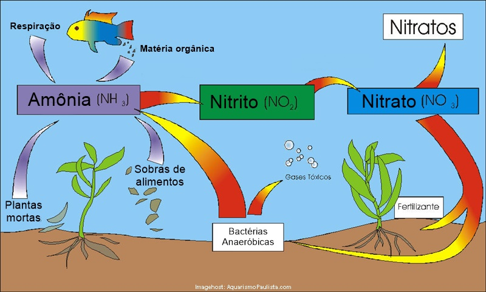

A importância das plantas no aquário
As plantas de aquário produzem oxigénio, observem o dióxido de carbono produzido pelos peixes e ajudam à renovação dos detritos orgânicos. Estas capacidades permitem à plantas contribuírem de forma decisiva para a criação de um ambiente estável no aquário. Além disso, limpam também a água de resíduos orgânicos originados pelas secreções dos peixes e pela alimentação, que se depositam na água. As substâncias azotadas que daí resultam são decompostas pela água e utilizadas como adubo.
A constituição da planta
A parte aérea das plantas caulescentes é constituída por caule, folhas e flor. Caule é, segundo a botânica, o eixo principal da planta, quer se trate de um pezinho tenro, como na limnophila, ou do tronco de uma sequoia gigante. A parte terminal do caule é a zona de crescimento da planta e chama-se cone ou ponto vegetativo.
Os caules podem crescer eretos ou difusos. As plantas caulenses têm um caule ereto e as folhas distribuem-se separadas entre si, permitindo ver o caule, enquanto as plantas acaules (ou de roseta) possuem um caule difuso e ramificado. As folhas encontram-se muito juntas, com entrenós muito curtos, formando uma roseta a partir do colo da planta.
As folhas nascem do caule. Dividem-se em limbo (a parte à qual chamamos “folha”) e pecíolo. Nas plantas com caules eretos, o local onde nascem apresenta-se muitas vezes saliente e tem o nome de nó. Os intervalos entre as folhas chamam-se entrenós. Na parte superior do limbo, no pecíolo e na bainha, todos verdes, encontram-se os tecidos de assimilação, que contém clorofila e onde se realiza a fotossíntese. Na parte inferior das folhas das plantas terrestres e nas folhas aéreas das plantas palustres ficam as estomas, que as plantas podem abrir ou fechar. Através destas aberturas, realiza-se a troca gasosa, isto é, a absorção e libertação de oxigénio e dióxido de carbono, assim como a libertação do vapor de água. As folhas subaquáticas não possuem estomas e a respiração processa-se por toda a superfície da folha.
A raiz fixa a planta ao solo e absorve os nutrientes aí contidos.
Esquema do Ciclo de Azoto